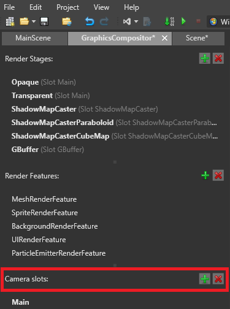
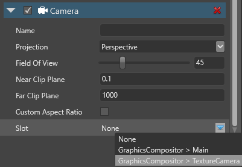

カメラ スロット
カメラスロットは、グラフィックスコンポジターをシーンのカメラにリンクします。各カメラをスロットに割り当てて、それからコンポジターが使用するスロットを定義します。これは、毎回新しいカメラを割り当てなくても、ルートシーンやグラフィックスコンポジターを変更することができるということを意味しています。
カメラごとに異なるカメラスロットを作成する必要はありません。代わりに、スロットを使用するカメラを切り替えます。最良の方法は、必要のないカメラのカメラコンポーネントを無効にすることです。
Note
カメラスロットには、カメラが割り当てられている必要があります。使用していないカメラスロットがある場合は、削除してください。
1つのカメラを複数のスロットに割り当てることはできません。必要な場合は、カメラのエンティティを複製して別のスロットに割り当ててください。
シーン内の複数の有効なカメラが同じカメラスロットを使用している場合、結果は未定義です。
カメラスロットを作成する
アセットビューで、Graphics Compositor アセットをダブルクリックします。

すると、グラフィックスコンポジターエディターが開きます。

グラフィックスコンポジターの詳細については、グラフィックス コンポジターを参照してください。
グラフィックスコンポジターエディターで、Camera slots の横にある
 （Add）をクリックします。
（Add）をクリックします。
Game Studio は、新しいカメラスロットをリストに追加します。

Tip
カメラスロットに名前を付けるには、リスト上でダブルクリックして新しい名前を入力します。
カメラをカメラスロットに割り当てる
シーンで、カメラコンポーネントを持つエンティティを選択します。
プロパティグリッドのカメラコンポーネントのプロパティの Slot で、カメラを割り当てたいスロットを選択します。
Note
ドロップダウンメニューには、ゲームの設定で選択したグラフィックスコンポジターのカメラスロットがリストアップされます。

グラフィックスコンポジターは、有効なカメラを、各フレームの適切なスロットにマッチングさせます。
スクリプトから、カメラを作成してカメラスロットに割り当てる
以下の通りです。
var camera = new CameraComponent();
camera.Slot = SceneSystem.GraphicsCompositor.Cameras[0].ToSlotId();
実行時にカメラを変更するには、Enabledプロパティを切り替えます。
Note
以下を確認してください。
少なくとも1台のカメラを有効にしておく。
複数のカメラを有効にして同じスロットに同時に割り当てていないこと。